X31–X58¶
Power Points, Circle Similicenters & Named Centers
2nd and 3rd power points, the Bevan point, Brocard midpoint, Kosnita point, and internal and external centers of similitude of the circumcircle, incircle, and nine-point circle.
X31–X58 (Power Points, Circle Similicenters & Named Centers) — 9 representative centers (from 28 in collection) constructed on acute reference triangle \((a, b, c) = (5, 6, 7)\) with unit baseline AB = \(1\).¶
X312nd POWER POINT
X31 = barycentric product of PU(8)
X323rd POWER POINT
X32 = Brocard-circle-inverse of X39
X33PERSPECTOR OF THE ORTHIC AND INTANGENTS TRIANGLES
X33 is the {X1,X4}-harmonic conjugate of X34. For a list of other harmonic conjugates, click Tables at the top of this page.
X34-BETH CONJUGATE OF X4
X34 is the center of perspective of the orthic triangle and the reflection in the incenter of the intangents triangle.
X35{X1,X3}-HARMONIC CONJUGATE OF X36
Let A' be the inverse-in-circumcircle of the A-excenter, and define B' and C' cyclically. Then the lines AA', BB', CC' concur in X35.

X36INVERSE-IN-CIRCUMCIRCLE OF INCENTER
X36 = circumcircle-inverse of X1
X37CROSSPOINT OF INCENTER AND CENTROID
X37 is the crosspoint of incenter and centroid.
X38CROSSPOINT OF X1 AND X75
X38 is the crosspoint of X1 and X75.
X39BROCARD MIDPOINT
X39 is the midpoint of the 1st and 2nd Brocard points, given by trilinears \(c/b : a/c : b/a\) and \(b/c : c/a : a/b\). The third and fourth trilinear representations were given by Peter J. C. Moses (10/3/03); cf. X511, X32, X182.
X40BEVAN POINT
X40 = point of concurrence of the perpendiculars from the excenters to the respective sides
X41-CEVA CONJUGATE OF X31
X41 = trilinear product of vertices of 4th mixtilinear triangle
X42CROSSPOINT OF INCENTER AND SYMMEDIAN POINT
X42 is the crosspoint of incenter and symmedian point.
X43-CEVA CONJUGATE OF X1
X43 is the {X2,X42}-harmonic conjugate of X1. X43 is the external center of similitude of the Bevan circle and Apollonius circle; the internal center is X1695.
X44-LINE CONJUGATE OF X1
X44 = crossdifference of PU(55)
X45-BETH CONJUGATE OF X1
X45 is the {X1,X9}-harmonic conjugate of X44.
X46-CEVA CONJUGATE OF X1
X46 = Bevan-circle-inverse of X36
X47-BETH CONJUGATE OF X34
X47 = perspector of ABC and extraversion triangle of X47 (which is also the anticevian triangle of X47)
X48CROSSPOINT OF X1 AND X63
X48 is the crosspoint of X1 and X63.
X49CENTER OF SINE-TRIPLE-ANGLE CIRCLE
Suppose that P and Q are distinct points in the plane of a triangle ABC . Let PA = reflection of P in line AQ, let QA = reflection of Q in line AP, and let MA = midpoint of segment PAQA. Define MB and MC cyclically. César Lozada found that if Q = isogonal conjugate of P, then the locus of P for which MAMBMC is perspective to ABC is the union of a cubic and 6 circles: specifically, the McCay cubic (K003), the circles {B,C,B',C'}}, {C,A,C',A'}}, {A,B,A',B'}}, and the circles {B,C,A'}}, {C,A,B'}}, {A,B,C'}}, where A',B',C' are the excenters of ABC. Moreover, if P = X3 and Q = X4, then MAMBMC is not only perspective, but homothetic, to ABC, and the center of homothety is X49. See Hyacinthos 23265, June 1, 2015.

X50-CEVA CONJUGATE OF X184
X50 = crosssum of X49 and X50
X51CENTROID OF ORTHIC TRIANGLE
X51 is the centroid of orthic triangle.
X52ORTHOCENTER OF ORTHIC TRIANGLE
X52 is the orthocenter of orthic triangle.
X53SYMMEDIAN POINT OF ORTHIC TRIANGLE
X53 is the symmedian point of orthic triangle.
X54KOSNITA POINT
Let O be the circumcenter of triangle ABC, and OA the circumcenter of triangle BOC. Define OB and OC cyclically. Then the lines AOA, BOB, COC concur in X54.

X55INSIMILICENTER(CIRCUMCIRCLE, INCIRCLE)
X55 is the insimilicenter(circumcircle, incircle).

X56EXSIMILICENTER(CIRCUMCIRCLE, INCIRCLE)
X56 is the perspector of the tangential triangle and the reflection of the intangents triangle in X1.
X57ISOGONAL CONJUGATE OF X9
X57 is the isogonal conjugate of X9.
X58ISOGONAL CONJUGATE OF X10
X58 is the isogonal conjugate of X10.